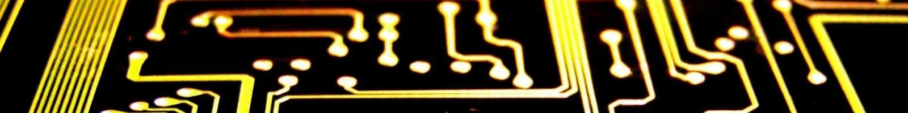

Introducción
Esto es un blog donde postearé mis cosas, normalmente de ordenadores y videojuegos.
Es posible que este blog esté sin nuevo contenido por largos lapsos de tiempo debido a que en mi día a día estoy muy ocupado y apenas tengo tiempo para dedicarme a esto.
Algo sobre mí
Me gustan los videojuegos y trastear en ordenadores y móviles, se me da muy bien manejar archivos y el montaje y mantenimiento de equipos; además puedo rootear móviles, hackear consolas y descargar ROMs para emulación.
También dibujo algún que otro cómic para pasar el tiempo.
Como sé manejar archivos, tengo una extensa colección de mods y skins para numerosos juegos, especialmente la saga GTA y Minecraft.
Un poco de historia
Me interesé a los 12 años, cuando mi vecino me instaló Minecraft en mi antigua tablet, desde entonces aprendí a descargar APKs y manejar archivos para ciertos juegos. Algo parecido sucedió en PC tras enseñarme mi amigo a instalar ese mismo juego.
Unos años después me interesó desmontar ordenadores para mejorarlos, conseguí algunos PCs antiguos para restaurarlos o usar sus piezas.
Un día apareció en mi móvil algo llamado "media.extractor": drenaba y calentaba la batería; no pude quitarlo así que tuve que formatear, aproveché para rootear el móvil e instalar crDroid (una custom ROM).
Actualmente ayudo a mi familia y conocidos con problemas técnicos.
